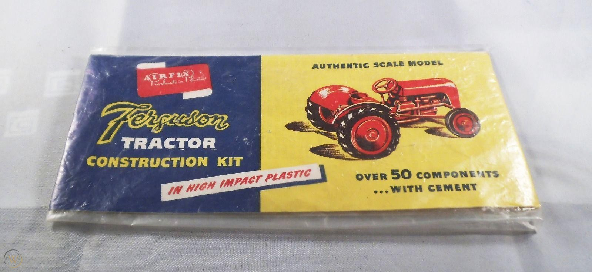

|Home| |The History of Airfix| |Airfix Now| | My Airfix Aircraft Hangar| | How to Make a Model|
Airfix was founded by Nicholas Kove, a Hungarian émigré, in 1939. The company's name was never related to aircraft models. According to historian Arthur Ward, Kove liked words that ended in 'fix' and wanted the name to begin with 'A' so it would be at the front of trade directories!
Originally, the company produced inflatable rubber toys. However, there was a shortage of rubber during the Second World War as it was needed for the war effort.
Instead, the company switched to injection moulding in 1947. With this new method, they manufactured a wide range of household items, mostly because Kove saw a sales opportunity making products out of a small amount of materials. In the late 1940s and early 1950s, Airfix was the largest producer of plastic combs in the UK!
Airfix was introduced into the industry of plastic model-making in 1949, when the company was commissioned to create a promotional model of a Ferguson TE20 tractor. Kove suggested that the unassembled parts should be sold to the public, which Ferguson approved of as they saw it as a promotional opportunity. The first Airfix kit was born.

Here is the original model kit for a Ferguson TE20 tractor.
The tractor kit was so popualr that Airfix soon expanded their range. First, a model of the Golden Hind in 1952 and then the iconic Spitfire. This became the most popular toy in 1955.
If you are interested in Airfix models, visit the company's official website